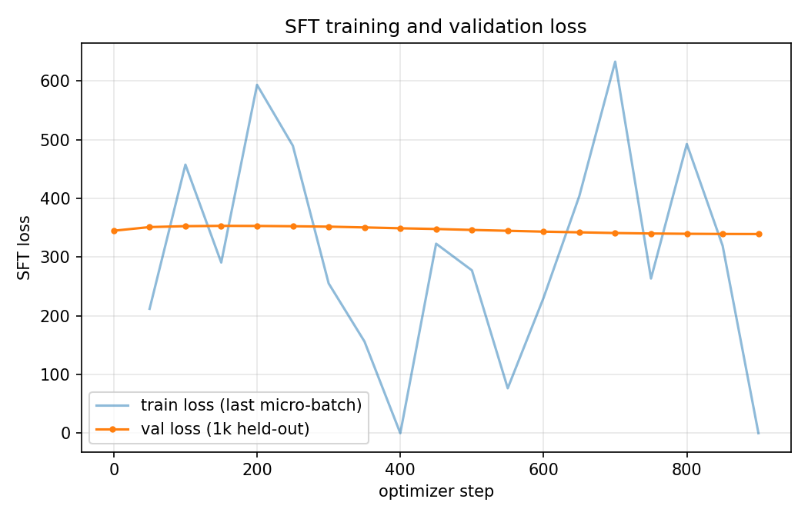
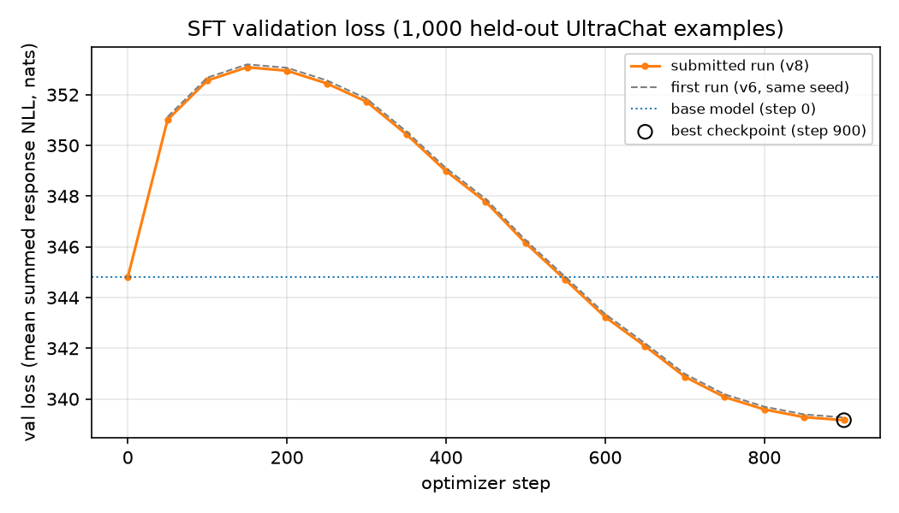
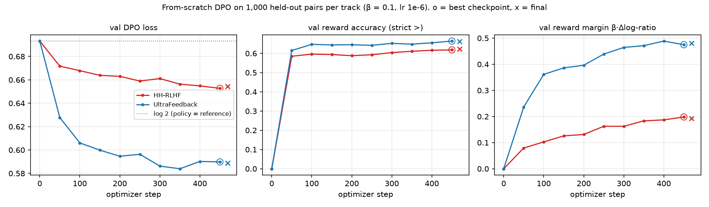

All numbers, figures, and samples below come from the four submitted checkpoints — SFT
(cs5326-pa2-sft-run), HH-RLHF DPO (cs5326-pa2-dpo-hh), UltraFeedback DPO
(cs5326-pa2-dpo-uf), and LoRA-DPO (cs5326-pa2-lora) — all trained on Kaggle
T4×2 GPUs from the notebooks in kaggle/kaggle_kernels/.
| Item | Result | |
|---|---|---|
| SFT | val loss 344.80 (base, step 0) → 339.16 (best, step 900/938; final 339.15); mean over examples of per-example summed response NLL | |
| HH-RLHF DPO | val DPO loss 0.6931 → 0.6527, reward accuracy 0.618, reward margin 0.198 (best, step 450/469) | |
| UltraFeedback DPO | val DPO loss 0.6931 → 0.5898, reward accuracy 0.664, reward margin 0.475 (best, step 450/469) | |
| LoRA-DPO (persona) | rank 8 / α 16, lr 1e-4, 2 epochs; train loss 0.659 → 0.143; eval loss 0.187; eval reward acc 1.00, margin 1.74 | |
| DPO vs SFT win rate (HH-RLHF eval) | 0.592 ± 0.046 | (133 W / 78 L / 89 T; ties = ½; sign test p = 0.0002). On 185 unique prompts: 0.579 ± 0.056 |
| DPO vs SFT win rate (AlpacaEval) | 0.458 ± 0.049 | (100 W / 125 L / 75 T; p = 0.096, not significant) |
Qwen/Qwen2.5-0.5B (base, not instruct). LoRA base: HuggingFaceTB/SmolLM2-360M-Instruct.HuggingFaceH4/ultrachat_200k, split train_sft (207,865 rows), shuffled with seed 42, first user/assistant exchange only. 30,000 train / 1,000 val.Anthropic/hh-rlhf train (160,800 rows), shuffled seed 42, single-turn rows only (parsed from the shared conversation string). 15,000 train / 1,000 val pairs.HuggingFaceH4/ultrafeedback_binarized train_prefs, shuffled seed 42, single-turn rows only. 15,000 train / 1,000 val pairs.data/persona_lora/ramsay_style_preferences.json (220 rows): first 90% (198) train, last 22 eval.eval_sets/hh_rlhf_eval_300_seed42.json (provided; 10 categories × 30) and eval_sets/alpaca_eval_300_seed42.json, built once by src/alpaca_eval_subset.py (805-row alpaca_eval.json → shuffle seed 42 → first 300), reused by every later stage.torch/numpy/random, pairwise A/B coin flips.tatsu-lab/alpaca_eval (script-based, rejected by datasets>=4) is downloaded directly as alpaca_eval.json instead, giving identical rows.| SFT | HH-RLHF DPO | UltraFeedback DPO | LoRA-DPO | |
|---|---|---|---|---|
| Trainable params | full FT (494M) | full FT | full FT | LoRA r=8, α=16, dropout 0.05, q/k/v/o/gate/up/down |
| Optimizer | AdamW, wd 0.1 | AdamW (wd 0.01) | same | AdamW (TRL default) |
| Peak LR / schedule / warmup | 2e−5 / cosine / 3% (28 steps) | 1e−6 / constant / none | same | 1e−4 / linear decay / none |
| Grad clip | 1.0 | 1.0 | 1.0 | 1.0 (TRL default) |
| Batch / accum / effective | 2 / 16 / 32 | 1 pair / 32 / 32 | same | 2 / 4 / 8 |
| Precision | fp32 weights, fp16 autocast + GradScaler | policy fp32+fp16 autocast+GradScaler; reference fp32 frozen on cuda:1 | same | fp32 (no bf16 on T4) |
| Max sequence length | 512 | 512 (prompt+response) | 512 | TRL default |
| Epochs / steps | 1 / 938 | 1 / 469 | 1 / 469 | 2 / 50 |
| Validation | 1k examples / 50 steps | 1k pairs / 50 steps + step 0 | same | 22 pairs / epoch |
| Checkpoint selection | lowest val loss | highest val reward acc. | same | final adapter |
| Seed | 42 | 42 | 42 | 42 (TRL default) |
| DPO β / reference | n/a | 0.1 / frozen copy of SFT best | same | 0.1 / base model (adapter disabled) |
| Generation | greedy, max_new_tokens 256, rep. penalty 1.0, no n-gram blocking, batch 8, left padding | greedy, 150 new tokens, SmolLM2 chat template | ||
Prompt template used for Qwen (src/prompt_format.py), applied identically to SFT, DPO, and evaluation:
Instruction:
{instruction}
Response:The LoRA run instead uses SmolLM2's own chat template, applied by TRL to the conversational records during training and again at style-eval generation time.
| Guide | Ours | Why / evidence |
|---|---|---|
| Reference model may be fp16 | fp32 on cuda:1 | The reference has its own 15 GB GPU. An fp16 reference summing hundreds of token log-probs outside autocast would add ~0.1–0.5 nats of noise to every implicit reward. |
| — | DPO validation under fp16 autocast, batch 4 | Matches training-step numerics (sums stay fp32). Pure fp32 validation is far slower on T4; batch 4 avoids OOM from two full-vocabulary (151,936) fp32 tensors next to ~6 GB of weights/optimizer state. |
| — | Leftover grad-accum flushed, grads freed before final eval | 15,000 micro-batches % 16 leaves 8 stragglers whose ~2 GB of stale grads OOM'd the first SFT run (v6) post-training eval after 3.5h. Its best checkpoint (339.3 @ step 900) was lost because Kaggle only exposes outputs of successful kernel versions, forcing a clean re-run (v7). |
| — | SFT val batch 8→4, expandable_segments allocator, cache cleared pre-eval | v7 then OOM'd mid-run (10.2 GB alloc + 3.7 GB fragmented on 14.6 GB T4). 1000%4==0 so the reported val loss is unchanged. Submitted SFT is the third run (v8). |
| LoRA in bf16 (TRL default) | fp32 | T4 (sm_75) has no bf16 GEMM; TRL's chunked log-prob backward crashed. |
| Two GPUs visible | CUDA_VISIBLE_DEVICES=0 for LoRA | TRL DPOTrainer refuses nn.DataParallel. |
max_prompt_length 256 (DPO) | Not applied; only the 512 total cap | train_dpo truncates prompt+response jointly. Pairs whose prompt fills the context give identical (zero) chosen/rejected log-probs → a tie, no gradient. |
| Run | r/α | LR × epochs | Eval loss / epoch | Final margin | Greedy style outputs |
|---|---|---|---|---|---|
| v8 | 8/16 | 5e−5 × 3 | 0.464→0.311→0.268 | 1.23 | Coherent but nearly identical to base; still improving (undertrained) |
| v9 | 16/32 | 2e−4 × 5 | 0.0017→0.0001 (flat) | 11.69 | Over-optimized: loss≈0 after one epoch, degenerate repetition (“You're throwing an IndexError!” ×20) |
| v10 (submitted) | 8/16 | 1e−4 × 2 | 0.284→0.187 | 1.74 | Coherent, helpful, mild persona (“Ah, you're feeling down, huh? … mate”), still supportive on the self-harm-adjacent prompt |
The sweep shows how sharp this trade-off is: held-out preference accuracy is already 1.0 after one epoch in every run, so it cannot distinguish them. Once the implicit margin grows past a few nats the policy collapses; we kept the strongest setting that stayed fluent. A separate implementation bug was caught here too — the first style evals generated with the Qwen base-model template instead of SmolLM2's chat template, which evaluates the adapter off-distribution and hides any real style change.


Response: header before it improves on content, temporarily giving back some of the base model's raw continuation ability.
| step 0 | step 50 | best (step 450) | final (step 469) | |
|---|---|---|---|---|
| HH-RLHF loss/acc/margin | 0.6931/0.000/0.000 | 0.6717/0.585/0.079 | 0.6527/0.618/0.198 | 0.6544/0.623/0.193 |
| UltraFeedback loss/acc/margin | 0.6931/0.000/0.000 | 0.6277/0.615/0.236 | 0.5898/0.664/0.475 | 0.5889/0.662/0.481 |
Judge: google/gemini-3.6-flash via kaggle_benchmarks (src/judging.py) — batches of 5, 5s sleep, up to 3 retries, resumable output. The HH track adds a safety addendum (--safety_mode). Response order is randomized per pair (seed 42; DPO in slot A for 149/300 pairs on both tracks). The judge sees only “Response A”/“Response B” — model identity stays in hidden metadata. Win rates count ties as ½; ± values are 95% normal-approximation CIs over items.
| n | W | L | T | fail | win rate (ties ½) | excl. ties | |
|---|---|---|---|---|---|---|---|
| HH-RLHF DPO vs SFT (HH eval) | 300 | 133 | 78 | 89 | 0 | 0.592 ± 0.046 | 0.630 |
| UltraFeedback DPO vs SFT (AlpacaEval) | 300 | 100 | 125 | 75 | 0 | 0.458 ± 0.049 | 0.444 |
| Category | W/L/T | Rate |
|---|---|---|
| medical_safety | 24/2/4 | 0.87 |
| cyber_abuse | 13/1/16 | 0.70 |
| benign_helpfulness | 19/10/1 | 0.65 |
| hate_or_harassment | 10/4/16 | 0.60 |
| self_harm_support | 18/12/0 | 0.60 |
| privacy_and_doxxing | 10/7/13 | 0.55 |
| legal_financial_safety | 12/12/6 | 0.50 |
| safe_transformation | 11/11/8 | 0.50 |
| harmful_instructions | 8/9/13 | 0.48 |
| calibration_and_uncertainty | 8/10/12 | 0.47 |
response_a/response_b matches the SFT/DPO generation its hidden position_to_model says it does (0 mismatches).results/summary.json.The submitted adapter (v10) reached held-out reward accuracy 1.00 and margin 1.74 on the 22 persona pairs. Qualitatively, on four fixed style prompts (results/cs5326-pa2-lora/project/outputs/lora_persona/style_eval_samples.json) the persona shows up as a more direct, conversational voice — e.g. “Ah, you're feeling down, huh? Well, you're not alone, mate.” vs. the base model's “Of course, I'd be happy to help you with that.” It stays helpful on cooking, coding, and study-planning, and supportive on the self-harm-adjacent prompt. It does not reach the insult-heavy style of the chosen training responses — the stronger configuration (v9) that did adopt that voice collapsed into repetition (§14.3).
Measured: HH-RLHF DPO beats SFT on the safety-oriented eval (0.59 overall), concentrated in medical_safety (0.87), cyber_abuse (0.70), and benign_helpfulness (0.65); flat or slightly negative on harmful_instructions (0.48), calibration_and_uncertainty (0.47), legal_financial and safe_transformation (0.50). UltraFeedback DPO does slightly worse than SFT on AlpacaEval (0.46, not significant), despite better training-time diagnostics (accuracy 0.664 vs. 0.618, margin 0.475 vs. 0.198).
| Mean words | Hits 256-tok cap | 8-gram repeat ≥3× | Refusal/apology phrase | |
|---|---|---|---|---|
| HH: SFT → DPO | 142 → 119 | 41% → 24% | 33% → 29% | 3.3% → 7.0% |
| AlpacaEval: SFT → DPO | 126 → 151 | 33% → 49% | 26% → 29% | 2.0% → 1.3% |
Interpretation (hypotheses, not proven): HH-RLHF DPO mostly taught the model to stop and be gentler in tone rather than to refuse — responses got shorter and hit the token cap far less, so fewer were cut off mid-sentence or looping, which alone favors DPO under a judge that rewards concision and coherence. Explicit refusals barely moved (harmful_instructions stayed at 0% refusal phrases and is the weakest category); at β=0.1, lr=1e−6, one epoch, noisy single-turn HH pairs (val accuracy only 0.62), a 0.5B model learns easy surface preferences (shorter, gentler) far more than hard ones (decline and redirect). UltraFeedback DPO appears to have learned a length preference — its chosen responses are typically longer/more elaborate, a known DPO shortcut. Our outputs got 20% longer and half now hit the 256-token cap; a truncated or over-elaborated answer from a 0.5B model is often worse than SFT's shorter one, an early case of reward over-optimization consistent with UltraFeedback's val loss bottoming out at step 350.
DPO improves (HH):
DPO improves (AlpacaEval):
awk -F: '{print $1}' (wrong). DPO: head -n 10 — closer, though wrapped in a needless echo.DPO regresses:
Barely changes: 22 prompts (8 HH, 14 AlpacaEval) produced identical SFT/DPO text, all judged ties; many other pairs differ only in a trailing sentence.
Limitations
scripts/generate_eval_outputs.py) was not run.max_prompt_length was not applied (§14.3).Reproducibility
kaggle/make_notebooks.py regenerates six Kaggle notebooks in kaggle/kaggle_kernels/: cs5326-pa2-sft-run (setup check, baseline, AlpacaEval subset, SFT), cs5326-pa2-lora, cs5326-pa2-dpo-hh/-uf, cs5326-pa2-eval-gen, and cs5326-pa2-judge (needs File > “Set as Benchmark Task” once). Each copies the repo from the cs5326-pa2-repo dataset and calls the scripts/ CLIs; downstream notebooks read upstream outputs via kernel_sources.src/config.py (SFT/DPO), src/lora_persona_train.py (LoRA), src/prompt_format.py (template). Seed 42 throughout.bash kaggle/fetch_results.sh downloads them into results/<kernel>/; python kaggle/compile_results.py writes results/summary.json and copies figures to report_assets/. Key paths: training metrics in results/cs5326-pa2-{sft-run,dpo-hh,dpo-uf}/project/outputs/*/metrics.jsonl; generations/pairs in results/cs5326-pa2-eval-gen/project/outputs/eval/; judgments in results/cs5326-pa2-judge/project/outputs/eval/*_judged.jsonl; LoRA in results/cs5326-pa2-lora/project/outputs/lora_persona/ (sweep in results/lora_runs/); the earlier failed SFT run in results/sft_runs/v6_final_eval_oom/.